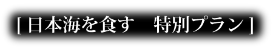
日本海でその日に獲れた新鮮な魚介類を惜しみなく、ふんだんに
使用した船盛りをご堪能ください。えび、かに、鯛やはまちなど
活きのよい天然ものは、今が旬です。この機会に是非ご堪能くだ
さい。
【2020年8月1日～12月31日までの限定プラン】
お一人様¥23800～>ご予約はこちら
- 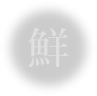
- 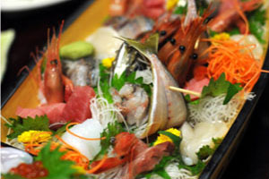
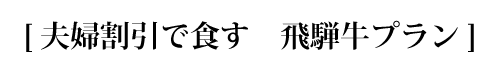
飛騨高山市の契約牧場からお届けするA5ランクの霜降り和牛です。 全国的にも高級牛肉として有名なひ飛騨牛は専門家の間でも非常に高い 評価を受けており、とろけるような食感とコクのある霜降りで有名にな りました。 【夫婦でご宿泊の方以外でもご予約いただけます。】
お一人様¥20800～>ご予約はこちら
- 
- 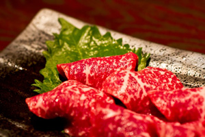
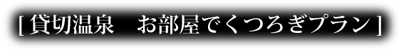
源泉かけ流しの温泉をさらに贅沢に味わいたい方へ。 お部屋に備え付けられたお風呂は露天となっており、旅館からの景色が 一望できます。いつもとは違うワンランク上の贅沢なひとときへ、貸切 露天風呂をこの機会にお楽しみください。
お一人様¥20800～>ご予約はこちら
- 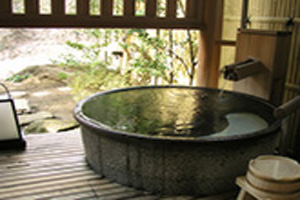
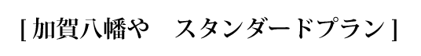
【加賀八万や】【和倉温泉】を心から楽しんでいただくためのスタンダード プランです。日本海で獲れた新鮮な魚介類や源泉かけ流しの天然温泉など ここでしか味わえないお楽しみが目白押しです。朝夕1泊2食付で翌日の 金沢旅行も安心です。
お一人様¥15800～>ご予約はこちら
- 
- 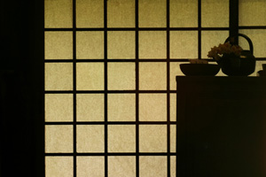